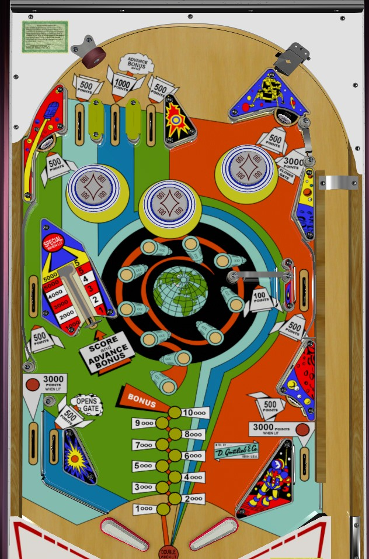

Orbit is the 4-player EM version; Outer Space is the otherwise-identical 2-player EM version. This guide focuses primarily on Orbit and Outer Space.
Tiger is a 1-player add-a-ball version produced for export. Differences observed in Tiger are mentioned at the end of the guide.
Super Orbit is a 4-player solid state remake of the EM original. Rules differences observed in Super Orbit are also mentioned at the end of the guide.
This guide does NOT apply to Space Orbit (1972), which is a sister game to 1970's Polo and Mini Cycle.
All versions of Orbit are end-of-ball bonus games at their core. Bumpers and spinners each give 1/10th of a bonus advance per bump or per spin. The vary-target on the left can give as many as 5 bonus advances. Use these to build the end of ball bonus in any way possible. Once bonus is maxed out, the best points come from continued vary-target shots or the gate back to the shooter lane in the upper right.
On Super Orbit only, a full shot to the vary-target awards double bonus, and the upper right gate collects the bonus mid-ball, allowing for continued use of the strategy.
The below picture is of Orbit, which was taken from the VPX recreation by Mustang1961 and Loserman76.
There are three top lanes in the upper left of the game. The center top lane scores 1,000 points and a bonus advance. The two lanes on either side score 500 points and 5 steps of the orbit path, equal to half a bonus advance. The ball can miss the top lanes completely, coming down from the top of the table slightly to the right of center.
Score 100 points and 1/10th of a bonus advance by moving the orbit path one step.
Score 500 points and 5 steps of the orbit path (1/2 of a bonus advance).
To the right of the rightmost pop bumper is a gate that puts the ball back into the shooter lane for a replunge. This gate is advertised as scoring 3,000 points, but these points tend not to be awarded, because it's common for the ball to go through this gate while the game is still counting off the 500 points from the nearby standup target. If the upper right gate is used, the right out lane gate will be closed if it had been opened.
Scores 100 points and 1 orbit step (1/10th of a bonus advance) per spin.
The rollover lanes to the right of the spinner and the far left of the table score 500 points and 5 orbit steps (1/2 of a bonus advance).
The vary-target can be pushed in to any of 6 different levels and is immediately reset after the ball stops coming in contact with it. A level 1 hit- a very light tap- scores 1,000 points and 1 bonus advance. Each subsequent level scores 1,000 more points and one more bonus advance than the previous, up to a level 5 hit, which scores 5,000 points and 5 bonus advances. A full hit, aka level 6, also scores 5,000 points and 5 bonus advances, but can also score a special if the plastic on top of the vary-target is lit. The special is lit intermittently based on the position of the orbit path, which changes every time 100 points are scored.
The left side of the table bottom is conventional. The left in lane scores 500 points and 5 orbit path steps, and opens the gate in the right out lane. The in/out lane post is much further right than usual, blocking off part of the in lane entrance and severely limiting the number of angles from which the in lane can be entered. The out lanes score 300 points and 3 orbit steps when not lit, or 3,000 points and no orbit steps or bonus advances when lit. In a 3-ball game, out lanes are always lit; in a 5-ball game, out lanes are only lit when the right out lane gate is open. The right out lane gate closes once used, at the end of the ball, or whenever the upper right gate is used. The right side of the table bottom has no in lane and the flipper backs up directly to the slingshot. Full size 3 inch flippers are used.
Bonus is advanced by the center top lane, vary-target, and every 10 orbit steps; most features in the game award 1 orbit step per 100 points collected. Max bonus is 15,000 points. Bonus is doubled on the final ball of the game only; there is no skill based bonus multiplier. There is no bonus holdover or mid-ball bonus collect.